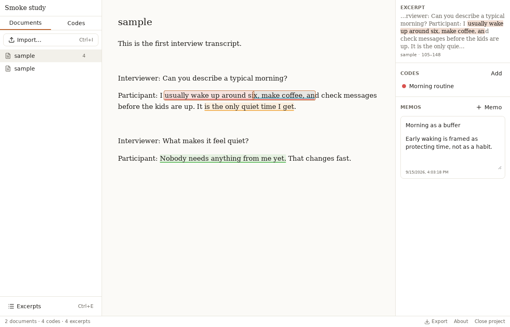
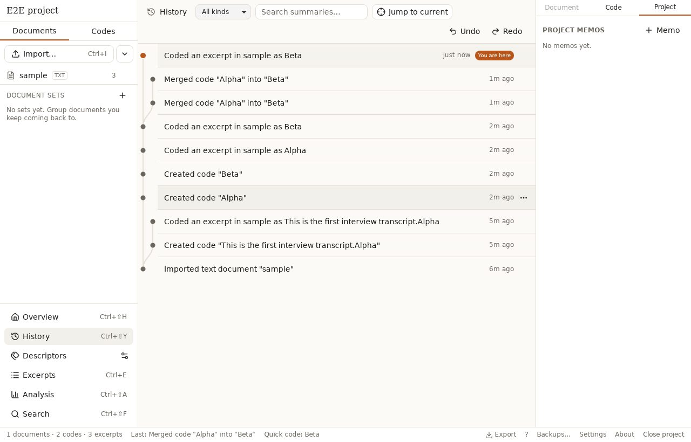

Coding a project, start to finish
This walks through everything you need for a first coding pass: getting documents in, building a codebook, coding text, cleaning up what you coded, and getting results out.
Try it without a project
On the start screen, click Try Misket with sample data to open a ready-made study — a quick way to see coding, the excerpt browser and the analysis views with real content before importing your own documents.
Import documents
Use Import documents (Ctrl/⌘+I) to add
plain text, Markdown, Word (.docx) and PDF (text only) files, one at a time or
a whole folder at once with Import folder… (optionally including
subfolders).
If a file has likely-accidental whitespace — runs of blank lines, trailing spaces, or hard-wrapped lines — Misket offers to tidy it up before import, with a before/after preview. This only happens at import time: document text is immutable afterwards, so it cannot be fixed later. Check Remember my choice in that dialog to skip the prompt on future imports; its Ask again on import link undoes that.
Build a codebook
Codes live in a nested tree with colors, descriptions and an optional single-key shortcut. Drag and drop to reorder or re-nest them. Deleting or merging a code shows an impact preview first (how many excerpts are affected), and Move excerpts to… hands one code's excerpts to another code without deleting either one.
You can also import a codebook exported from another Misket project (JSON or CSV): either merge it into the current codebook by matching code names, or add it fresh under a code you choose.
Code text
Select a span of text in the document, then either:
-
press Ctrl/⌘+K to open the code picker — type to filter,
or type
>nameto create a new code on the spot and apply it immediately; or - press that code's own hotkey, if you gave it one in the codebook.
The picker shows each code's description and, for nested codes, its full path, so you can tell similarly named codes apart. Excerpts can overlap: where several coded spans touch the same text, Misket draws them as stacked colored underline lanes (up to four) over a neutral tint, so you can see everything that applies to a passage at a glance.
Auto-code many matches or turns at once
Once you keep finding the same pattern by hand, code every instance in one step. Open Search (Shift+Ctrl/⌘+F), turn on Regex if you need a pattern rather than plain text (a name spelled two ways, a number followed by a unit), then click Auto-code all N matches…. Pick a code, choose whether to code just the match, its whole sentence, or its whole paragraph, and confirm — matches that share a sentence or paragraph become one excerpt. The whole batch is one undo step.
For interview transcripts that consistently mark who is speaking —
Name:, [Name] or Name (00:12): lines that recur
through the document — the document header shows a Speakers menu listing
each detected speaker with their turn count. Pick one and a code to tag every one of their
turns (the spoken text, not the label) in a single step.
Find your place in a long transcript
Every paragraph is numbered in the document's left gutter, so you can cite "paragraph 47" in a memo or a meeting and get back to it with Ctrl/⌘+G, which asks for a paragraph number and scrolls there. Ctrl/⌘+Home and Ctrl/⌘+End jump to the top and the bottom. Turn the numbers off under Ctrl/⌘+, if you would rather not see them.
Misket also remembers how far you had read in each document and returns you there the next time you open it — unless you arrived by clicking an excerpt or a search hit, in which case it takes you to that passage instead. To rename the document you are reading, double-click its title or press F2.
Adjust boundaries
Coded exactly the wrong three words? Focus the excerpt and use the keyboard to grow or shrink either edge by a word or a character (see the shortcuts page for the exact chords), or drag the round grips at either end of the focused excerpt with the mouse. You can also split an excerpt at the text cursor, or merge it with a touching neighbour (their codes and memos combine). Every adjustment, split and merge is undoable.
Excerpt browser and filters
Open the excerpt browser with Ctrl/⌘+E to see every coded excerpt across the project. Filter by:
- Codes — pick one or more, optionally including their sub-codes, and require Match all selected codes instead of any of them;
- Documents — narrow to one or more source documents;
- Uncoded only — find passages nobody has coded yet;
- Descriptors — document attributes such as "Age is more than 30" or "Site is any of North, South";
- Query — a Boolean or proximity expression over codes (see below).
Clicking a row jumps back to that excerpt in context. Tick the checkboxes (Shift+click for a range, or "Select all N loaded") to add a code to, remove a code from, or delete many excerpts at once; Escape clears the selection and undo reverses the whole batch.
Descriptors themselves — document attributes such as site, interview wave or age group — are defined and assigned from the descriptors panel, either per document or in a table of every document at once. Fields can be text, number, choice or date.
Boolean and proximity queries
The Query chip builds a retrieval expression over codes: pick an operator, then a code per row. Add a group row to nest one level, so you can ask for "Access and (Barriers or Cost)".
- and — both codes, on the same or overlapping passages;
- or — either code;
- not — the first code, where the second does not overlap it;
- near — the first code close to the second, either in the same paragraph or within a number of characters you choose.
Codes count as together when their excerpts overlap, not only when one excerpt carries both — two coders rarely draw exactly the same range, and "A and B" would find almost nothing if they had to. An excerpt carrying both codes matches "A and B" and "A near B", and is excluded from "A not B".
Save a query with the rest of the filter under a name ("Access without cost talk") and it reappears in the Saved menu, spelled out underneath so you can tell two apart at a glance.
Memos
Attach a memo to a document, a code, an excerpt, or the project as a whole with Ctrl/⌘+M. Memos are plain notes for your own analytic thinking — reflections, definitions, questions to revisit — kept next to whatever they are about.

Analysis views
Open the analysis views with Shift+Ctrl/⌘+A:
- a code frequency table (each code's own count and its count including sub-codes, per document, plus a small sparkline of that code's coding activity over the last 30 days);
- a co-occurrence matrix showing how often two codes overlap on the same text;
- a code-by-document heatmap showing which documents carry which codes and how densely;
- a code-by-descriptor cross-tab ("By descriptor") putting codes against the values of any document attribute — one column per site or interview wave, automatic bins for a number field, one column per month for a date field, and a (no value) column for the documents you have not filled in yet. Choose whether a cell counts excerpts or documents; the n under each column header is how many documents fall in it, so an uneven group is visible rather than implied;
- a word frequency view: pick a document/set or a code (only the text under that code is counted, not the whole document), turn stop words and stemming on or off, and get a sortable table or a word cloud. Stemming groups word forms together ("code", "coding", "coded") under whichever form occurs most; edit the project's own stop-word list from the same view.
Every cell or word clicks through — to the matching excerpts in the browser, or, for a word, to a project search seeded with that term — and each view exports to CSV. The overview screen's own 30-day sparkline can likewise be narrowed to one code with the picker above it.
Both find in document (Ctrl/⌘+F) and find in project (Shift+Ctrl/⌘+F) have a Match word forms toggle: turn it on and a search for "code" also finds "coding" and "coded", using the same stemming as the word frequency view.
Framework matrices
The fourth tab, Framework, is the grid applied research is usually written up from: cases down the side, themes across the top, and a short summary of what that case said about that theme in every cell.
Press New and give the matrix a name, then choose its shape. Rows are one per document, one per document in a set ("Round 1 interviews"), or one per value of a descriptor — pick "Site" and you get a North row and a South row, each pooling that site's documents, with anything unlabelled gathered under (no value). Columns are the codes in a code set, or a list you tick. Nothing is frozen: importing a document, filling in a descriptor or coding another passage changes the grid the next time you open it, and Configure reshapes it without losing a single summary.
Type straight into a cell; it saves a moment after you stop, and every edit is undoable. The badge in the corner counts the excerpts behind that cell — the ones in that row's documents carrying that code or any of its sub-codes. Click it, or press Ctrl/⌘+Enter, and they open in a drawer beside the grid rather than replacing it, so you can read the evidence while writing the summary. Tab and Shift+Tab walk the cells in reading order, and Ctrl/⌘ with an arrow key moves by one.
Export the finished matrix as CSV for a spreadsheet, or as a Markdown table to paste into a report.
Undo, redo and history
Ctrl/⌘+Z and Shift+Ctrl/⌘+Z undo and redo any change — coding, editing the codebook, writing a memo — and survive closing the app, because the whole undo tree lives in the project file rather than in memory. Editing again after an undo does not throw the redone-away steps out: it starts a new branch alongside them, so nothing you tried is ever really lost.
Open the History view with Shift+Ctrl/⌘+Y, or the "Open History" button on the overview, to see that tree as a branch graph: every step, newest at the top, with a lane per branch. Click any step to jump the project straight to it — no need to undo one change at a time. From a step's menu you can name a branch ("Fork here…"), rename one later, or compact everything before a step away once you are sure you will not need it, to keep a long project's history down to size.

Export and backups
Export the codebook as CSV or a reusable JSON file, excerpts as CSV, or the whole project as JSON, from the export menu.
Before a destructive change — deleting a document, deleting a code that has excerpts,
merging one code into another, or importing a codebook — Misket writes a timestamped copy
into a <project name>.backups/ folder next to the project file, keeping
the newest 20 (configurable in Settings). Open Backups… in the status bar
to browse them, see their size and reason, and restore one — restoring itself backs up the
current state first, so it is never destructive. Use
Export → Save a copy as… at any time for a manual snapshot. See
Data & privacy for more on how your project file is stored.